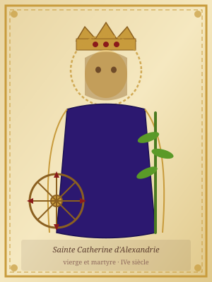

The Medieval French Hagiography Project
Browse by Saint
Bishop of Tours, Apostle of the Gauls · 4th century

Virgin and martyr of Alexandria · 4th century
Bishop of Myra, patron of children · 4th century
Virgin and martyr of Antioch · 3rd century